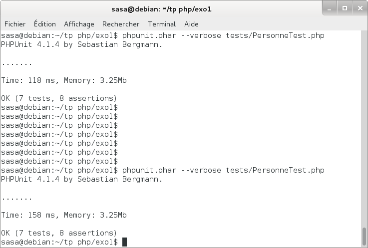
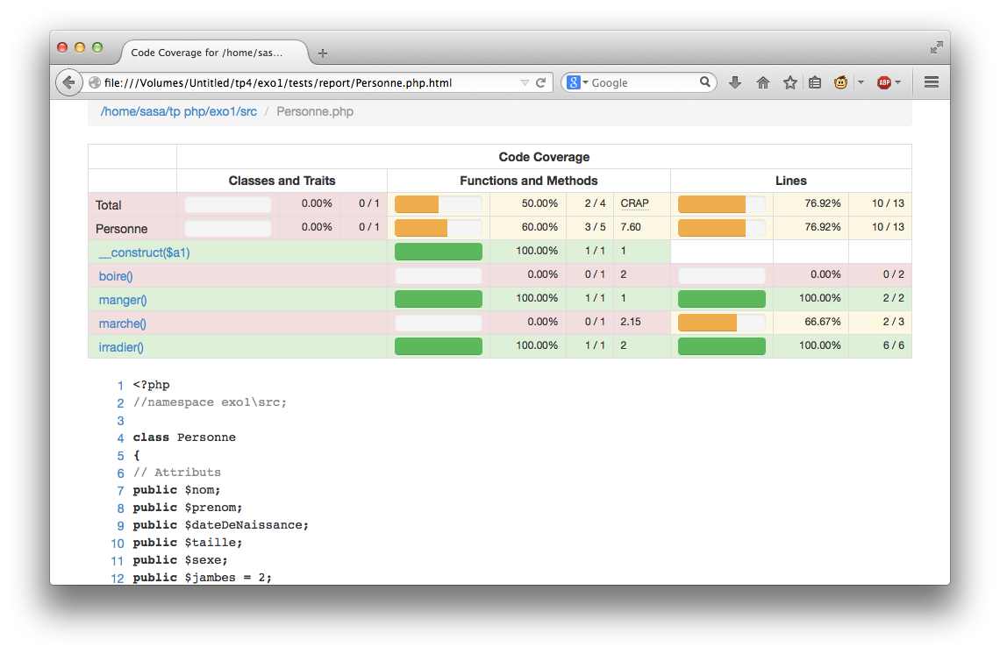

TP cycle de vie des applications
S. Salva
TP4 Tests Unitaires en
PHP
|
1. Objectifs
Savoir développer des tests unitaires en php
Effectuer la couverture de test d'une application
2. Organisation et première utilisation
Dans ce TP, PHPUnit sera employé en ligne de commande (ce qui est fait
généralement, certains utilisent également Netbeans).
Pour le projet "exo1", nous avons l'arborescence classique suivante:
exo1
—tests
—src
Pour chaque classe de nom "Class" nous avons un fichier ClassTest dans
le répertoire tests.
Pour ce TP, il est obligatoire d'avoir
la documentation de PHPUnit ouverte ! (disponible ici).
A
Récupérez la classe Personne.php. et le test unitaire PersonneTest.php. Faites un projet
exo1 et organisez le.
Phpunit diffère peu de
Junit, on a des annotations, du code, des assertions. Ici, le cas de
test hérite de PHPUnit_Framework_TestCase. Au mieux, il n'y a qu'une
assertion par méthode. La liste des assertions possible est ici : assertions.
Pour installer Phpunit, faites:
wget
https://phar.phpunit.de/phpunit.phar
chmod +x phpunit.phar
mv phpunit.phar /*compte
personnel*/php/phpunit
Ajoutez /*compte personnel*/php/ à
votre variable d'environnement $PATH (ajoutez en fin de fichier
.bashrc, export PATH=$PATH:/*compte
personnel*/php/ dans votre
fichier .bashrc)
Pour lancer les tests: phpunit
--verbose tests/PersonneTest.php. Ca doit donner un écran de ce
type:

B
En se basant sur la méthode irradier,
complétez votre cas de test (plusieurs méthodes) afin de couvrir
l'ensemble de
ses fonctionnalités. Combien avez-vous écris de méthodes?
C
Normalement, étant donné que vous êtes très fort et que ce n'est pas
votre premier TP, vous avez bien sur utilisé une fixure (méthode setUp
au minima). Vous pouvez également utiliser Hamcrest
pour PHP (ce serait mieux mais va vous prendre un peu plus de temps
pour l'installer, docn pour ceux qui ont fait du PHP avant)
voir ici
D
Ajoutez des dépendances entre
certaines de vos méthodes pour que si un cas de test ne passe pas, ceux
qui en dépendent sont annulés. Celà se fait avec l'annotation @depends.
E
PHPunit offre l'ooportunité d'utiliser un dataprovider afin de factoriser
plusieurs tests identiques construits avec des données différentes.
Créez un test pour la méthode irradier avec les valeurs de pied 2,3,5.
(On attend respectivement 3,4,5). En php, on utilise rarement des
getter setter, pied est ici public.
F
La méthode marche retourne
une
exception. Créez un test permettant de vérifier que l'exception peut
être levée et que le message d'erreur retourné est 'trop de pieds'. Il
y a deux possibilités: du code ou une annotation.
2. Sorties
A
Les programmes PHP produisent ("souvent") du code HTML en sortie. C'est
ici le cas pour la classe Personne et sa méthode manger. Pour tester la sortie, il
est possible d'utiliser la méthode de Phpunit expectOutputString('chaine attendue').
Faites un test pour la méthode manger.
Comme vous le voyez, ca fonctionne bien ici, MAIS il serait bien
fastidieux de tester des sites Web de cette façon. C'est fait avec
d'autres outils que nous verrons, tels que Selenium.
3. Suites de test
A
Créez une classe Etudiant en vous basant sur la classe Personne. Puis
créez un cas de test simple pour étudiant.
Vous souhaitez lancer, d'une façon simple, l'exécution de tous vos
tests. Comment faire ?
A
Il vous ai demandé de créer une suite de test composée des 2 cas de
test précédants. Pour cela, il faut créer un fichier XML déclarant
les 2 cas de test. Voici un exemple (tiré de la doc):
<phpunit>
<testsuites>
<testsuite
name="money">
<file>tests/IntlFormatterTest.php</file>
<file>tests/MoneyTest.php</file>
<file>tests/CurrencyTest.php</file>
</testsuite>
</testsuites>
</phpunit>
Pour lancer l'exécution de la suite de test, il faut utiliser l'option
de ligne de commande --testsuite
<pattern>.
4. Couverture de code
Phpunit permet également d'obtenir un rapport sur la couverture de
code. Pour créer ce rapport, il faut utiliser l'option de ligne de
commande --coverage-html ./report.
Le rapport en HTML sera placé dans le répertoire report. Il est
possible de créer des rapports en XML CSV, etc.
Pour ce cela fonctionne, il faut aussi donner une "whitelist" qui indique les fichiers à couvrir. Voici dans la doc
Voici un exemple:

A
Calculez la couverture de code que vous obtenez avec la classe
Personne. Analysez ce rapport (besoin de plus ???)
B
Complétez vos tests pour obtenir une couverture de 100%.